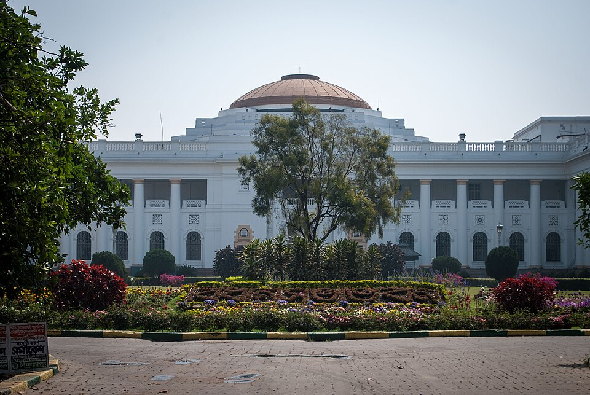
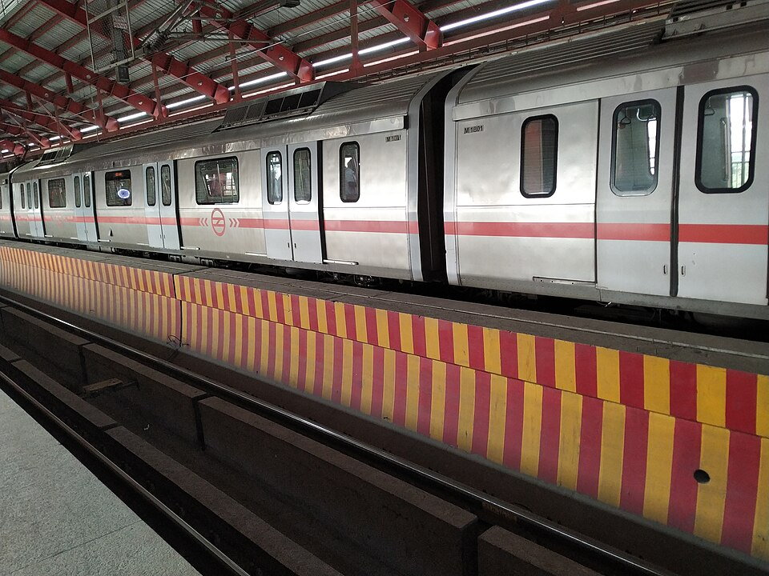
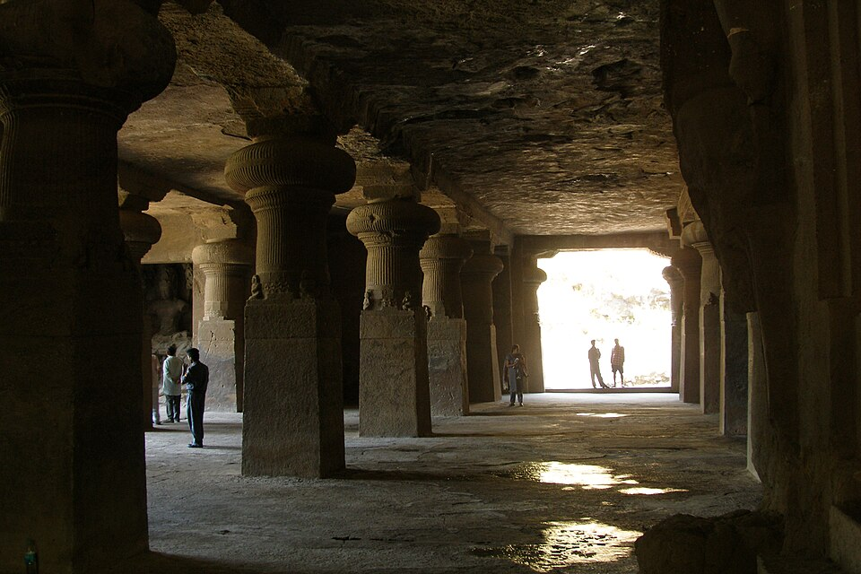

राष्ट्रीय
 राष्ट्रीय
राष्ट्रीयसमाजवादी पार्टी प्रमुख अखिलेश यादव का फेसबुक पेज बहाल, मेटा को दिया धन्यवाद
समाजवादी पार्टी के अध्यक्ष अखिलेश यादव का आधिकारिक फेसबुक पेज बहाल कर दिया गया है। पार्टी ने इसके लिए मेटा का आभार जताया है। इस पेज पर 90 लाख से अधिक फॉलोअर्स हैं।
राष्ट्रीयबिहार में JDU मना रही सुशासन दिवस, नीतीश कुमार के 21 साल के कामकाज पर चर्चा
जनता दल यूनाइटेड (JDU) बिहार के सभी 38 जिलों में सुशासन दिवस मना रही है। पार्टी नीतीश कुमार के मुख्यमंत्री के रूप में 21 साल पूरे होने पर विकास कार्यों और उपलब्धियों को जनता के सामने रख रही है।
राष्ट्रीयकर्नाटक के सभी स्कूलों में छात्राओं को मुफ्त सैनिटरी पैड देना अनिवार्य
कर्नाटक सरकार ने छठी से 12वीं कक्षा तक की सभी छात्राओं को स्कूलों में मुफ्त सैनिटरी पैड उपलब्ध कराने का आदेश दिया है। इसके साथ ही शौचालयों में वेंडिंग मशीनें लगानी होंगी।
 राष्ट्रीय
राष्ट्रीयपुरी जगन्नाथ मंदिर में दर्शन के नाम पर ठगी, पांच गिरफ्तार
ओडिशा के पुरी में जगन्नाथ मंदिर में सुगम दर्शन कराने का झांसा देकर 13 प्रवासी भारतीयों से ठगी करने के आरोप में पुलिस ने पांच लोगों को गिरफ्तार किया है।
राष्ट्रीयगुजरात के बनासकांठा में गर्भवती प्रेमिका की हत्या, प्रेमी गिरफ्तार
गुजरात के बनासकांठा जिले में 19 वर्षीय गर्भवती युवती की गला घोंटकर हत्या के मामले में पुलिस ने उसके प्रेमी विजय सोलंकी को गिरफ्तार किया है। पोस्टमार्टम रिपोर्ट से मामले का खुलासा हुआ था।
राष्ट्रीयपुणे में सॉफ्टवेयर इंजीनियर ने की गर्लफ्रेंड की हत्या, अवैध रिश्ते का शक
पुणे के हिंजवडी इलाके में अवैध रिश्ते के शक में एक सॉफ्टवेयर इंजीनियर द्वारा अपनी पार्टनर की पीट-पीटकर हत्या करने का मामला सामने आया है। पुलिस मामले की जांच कर रही है।
राष्ट्रीयसोनिया गांधी को सावरकर पर टिप्पणी को लेकर कानूनी नोटिस
कांग्रेस नेता सोनिया गांधी को उनकी नई किताब में वीर सावरकर पर की गई टिप्पणियों के लिए कानूनी नोटिस भेजा गया है। वीडी सावरकर के पड़पोते ने 15 दिन में जवाब मांगा है।
राष्ट्रीयसेना और सीएपीएफ के व्हाट्सएप ग्रुप में पाकिस्तानी जासूसों की सेंध, ऑडिट के आदेश
सुरक्षा एजेंसियों ने सेना और सीएपीएफ अधिकारियों के निजी व्हाट्सएप ग्रुपों में पाकिस्तानी जासूसों की घुसपैठ पकड़ी है। जासूस साइलेंट मेंबर बनकर गोपनीय जानकारी पर नजर रख रहे थे, जिसके बाद पूरे सिस्टम का ऑडिट कराने का निर्देश दिया गया है।
 राष्ट्रीय
राष्ट्रीयअसम के मुख्यमंत्री हिमंता बिस्वा सरमा ने साझा किया बोगीबील ब्रिज का महत्व
असम के मुख्यमंत्री हिमंत बिस्वा सरमा ने चीन सीमा के पास स्थित बोगीबील ब्रिज का सामरिक और आर्थिक महत्व बताया है। ब्रह्मपुत्र नदी पर बना यह रेल-सड़क पुल डिब्रूगढ़ और धेमाजी को जोड़ता है।
राष्ट्रीयदिल्ली के जामा मस्जिद थाने में पुलिसकर्मियों पर चाकू से हमला, एनकाउंटर में आरोपी घायल
दिल्ली के जामा मस्जिद थाने में पूछताछ के दौरान एक आरोपी ने पुलिसकर्मियों पर चाकू से हमला कर दिया, जिसमें नौ जवान घायल हो गए। इसके बाद पुलिस मुठभेड़ में आरोपी के पैर में गोली लगी और उसे गिरफ्तार कर लिया गया।
राष्ट्रीयमथुरा पुलिस ने शादी समारोहों में चोरी करने वाले कड़िया सांसी गैंग के 120 चेहरे किए जारी
मथुरा पुलिस ने शादी समारोहों में नकदी और आभूषण चुराने वाले अंतरराज्यीय कड़िया सांसी गिरोह के 120 से अधिक सदस्यों की तस्वीरें जारी कर लोगों को सतर्क रहने की चेतावनी दी है।
राष्ट्रीयकौशांबी में प्रेमी से शादी के विरोध पर बेटी ने रची मां की हत्या की साजिश
उत्तर प्रदेश के कौशांबी में प्रेमी से शादी की जिद में बेटी ने मां की हत्या कर दी। पुलिस ने आरोपी बेटी और उसके प्रेमी को गिरफ्तार कर लिया है।
राष्ट्रीयउत्तर प्रदेश विधानसभा चुनाव 2027: समाजवादी पार्टी और कांग्रेस के बीच सीट शेयरिंग पर बैठक
साल 2027 के उत्तर प्रदेश विधानसभा चुनाव के लिए समाजवादी पार्टी और कांग्रेस ने सीट बंटवारे को लेकर शुरुआती चर्चा शुरू कर दी है। दोनों दलों के नेताओं ने बैठक को सकारात्मक बताया है।
 राष्ट्रीय
राष्ट्रीयप्रधानमंत्री नरेंद्र मोदी पहली बार जाएंगे दिल्ली के उपराज्यपाल आवास
प्रधानमंत्री नरेंद्र मोदी गुरु नानक देव के प्रकाश पर्व के अवसर पर दिल्ली के उपराज्यपाल आवास पर आयोजित शबद कीर्तन कार्यक्रम में शामिल होंगे।
 राष्ट्रीय
राष्ट्रीयमथुरा में धीरेंद्र शास्त्री को कंस के रूप में दिखाने पर विवाद, डीएम को ज्ञापन
मथुरा के कंस वध मेले में बागेश्वर धाम के पीठाधीश्वर धीरेंद्र कृष्ण शास्त्री को कंस के रूप में दर्शाने वाली झांकी पर विवाद खड़ा हो गया है। उनके समर्थकों ने जिला प्रशासन से शिकायत कर कार्रवाई की मांग की है।
राष्ट्रीयउत्तर प्रदेश चुनाव: कांग्रेस और सपा के बीच सीट बंटवारे पर जल्द बन सकती है सहमति
उत्तर प्रदेश विधानसभा चुनाव 2027 के लिए कांग्रेस और समाजवादी पार्टी के बीच सीट बंटवारे को लेकर बातचीत आगे बढ़ रही है। दोनों दलों के नेताओं के अनुसार अगले दो से तीन दिनों में समझौता होने की संभावना है।

राष्ट्रीयपश्चिम बंगाल का नाम बदलने की तैयारी, 9 दिसंबर को विधानसभा में आएगा प्रस्ताव
पश्चिम बंगाल का नाम बदलकर ‘पश्चिम बंगा’ करने का प्रस्ताव 9 दिसंबर को विधानसभा में पेश किया जाएगा। कैबिनेट बैठक में यह निर्णय लिया गया है।
 राष्ट्रीय
राष्ट्रीयपश्चिम बंगाल SIR: सुप्रीम कोर्ट का ईसीआई को न्यायाधिकरण बढ़ाने और नाम हटाने के मामलों को प्राथमिकता देने का निर्देश
सुप्रीम कोर्ट ने चुनाव आयोग को पश्चिम बंगाल में चुनावी सूची से नाम हटाने के खिलाफ अपील सुनने वाले न्यायाधिकरणों की संख्या बढ़ाने और ऐसे मामलों को प्राथमिकता देने का निर्देश दिया है।
राष्ट्रीयफरीदाबाद में देश विरोधी और पाकिस्तान के समर्थन में नारे लगाने वाला गिरफ्तार
हरियाणा के फरीदाबाद में विवाद के दौरान पाकिस्तान और आतंकी संगठनों के समर्थन में नारे लगाने का वीडियो वायरल होने के बाद पुलिस ने आरोपी सुन्नी खान को गिरफ्तार कर लिया है।
राष्ट्रीयकरीना और करिश्मा के संडे लंच में शामिल हुईं सुप्रिया सुले
मुंबई में रीमा जैन के आवास पर आयोजित फैमिली लंच में करीना कपूर, करिश्मा कपूर और एनसीपी नेता सुप्रिया सुले शामिल हुईं। इस दौरान अरमान जैन ने खुद खाना बनाया।
राष्ट्रीयदिल्ली के एक कैफे में पाकिस्तानी ड्रामे की स्क्रीनिंग पर सोशल मीडिया पर बहस
दिल्ली के एक कैफे में पाकिस्तानी ड्रामा 'दर-ए-नजात' की स्क्रीनिंग का वीडियो सामने आने के बाद सोशल मीडिया पर मिली-जुली प्रतिक्रियाएं और बहस छिड़ गई है।
राष्ट्रीयसुप्रीम कोर्ट ने दल-बदल कानून में बदलाव की मांग पर केंद्र और चुनाव आयोग से मांगा जवाब
सुप्रीम कोर्ट ने दल-बदल कानून में संशोधन की मांग वाली याचिका पर केंद्र सरकार, चुनाव आयोग, लॉ कमीशन और मंत्रालयों को नोटिस जारी किया है। याचिका में इस्तीफे के जरिए अयोग्यता से बचने की प्रवृत्ति पर रोक लगाने की मांग की गई है।
राष्ट्रीयगाजियाबाद में दिल्ली-मेरठ एक्सप्रेसवे पार कर रहे दंपती और बेटे की सड़क हादसे में मौत
गाजियाबाद के क्रॉसिंग रिपब्लिक क्षेत्र में दिल्ली-मेरठ एक्सप्रेसवे पार कर रहे एक ही परिवार के तीन सदस्यों को तेज रफ्तार स्कॉर्पियो ने टक्कर मार दी, जिससे उनकी मौके पर ही मौत हो गई।
 राष्ट्रीय
राष्ट्रीयभारतीय रेलवे की करंट टिकट बुकिंग सुविधा, चार्ट बनने के बाद ऐसे पाएं सीट
ट्रेन में कन्फर्म टिकट नहीं मिलने पर यात्री IRCTC के जरिए करंट टिकट बुक कर सकते हैं। यह सुविधा ट्रेन का चार्ट तैयार होने के बाद खाली बची सीटों के लिए मिलती है।
 राष्ट्रीय
राष्ट्रीयसरकार की यूनिवर्सल सब्सिडी योजना का दावा फर्जी, पीआईबी ने दी चेतावनी
सोशल मीडिया पर वायरल हो रहा वह दावा फर्जी है, जिसमें 2026 की सरकारी यूनिवर्सल सब्सिडी योजना के तहत हर नागरिक को ₹30,000 मिलने की बात कही जा रही है।
राष्ट्रीयएआर रहमान ने नितेश तिवारी की फिल्म 'रामायण' के लिए छोड़े 12 प्रोजेक्ट
ऑस्कर विजेता संगीतकार एआर रहमान ने खुलासा किया है कि उन्होंने नितेश तिवारी की फिल्म 'रामायण' के संगीत पर ध्यान केंद्रित करने के लिए करीब 10 से 12 फिल्मों के प्रस्ताव ठुकरा दिए।
राष्ट्रीयबिहार का बख्तियारपुर-ताजपुर महासेतु 15 साल बाद भी अधूरा, अब जून 2027 की नई डेडलाइन
बिहार के बख्तियारपुर-ताजपुर महासेतु का निर्माण 15 साल बाद भी पूरा नहीं हुआ है। देरी के कारण परियोजना की लागत बढ़कर ₹4,572 करोड़ हो गई है, और अब इसे जून 2027 तक चालू करने का नया लक्ष्य रखा गया है।
राष्ट्रीयअखिलेश यादव अयोध्या जाने से पहले प्रायश्चित करें: बृजभूषण शरण सिंह
पूर्व भाजपा सांसद बृजभूषण शरण सिंह ने गोंडा में कहा कि अखिलेश यादव को अयोध्या दौरे से पहले संतों का प्रायश्चित वाला वचन मान लेना चाहिए। उन्होंने ओवैसी और चंद्रशेखर के गठबंधन को बेमेल बताया।
राष्ट्रीयवैशाली के नीतीश सेतु पर पीएम मोदी का पोस्टर फाड़ने के मामले में तीन गिरफ्तार
बिहार के वैशाली जिले में नीतीश सेतु पर प्रधानमंत्री नरेंद्र मोदी और अन्य एनडीए नेताओं के पोस्टर फाड़ने और हंगामा करने के आरोप में पुलिस ने तीन लोगों को गिरफ्तार किया है।
 राष्ट्रीय
राष्ट्रीयउत्तर प्रदेश चुनाव: सीट शेयरिंग को लेकर सपा और कांग्रेस की बैठक आज
उत्तर प्रदेश विधानसभा चुनाव के लिए समाजवादी पार्टी और कांग्रेस के बीच सीट बंटवारे पर दिल्ली में सोमवार से पहले दौर की बैठक शुरू हो रही है। दोनों दलों की समन्वय समितियां इस पर मंथन करेंगी।
राष्ट्रीयउत्तर प्रदेश विधानसभा चुनाव 2027: अगले महीने से यूपी दौरे शुरू कर सकते हैं अमित शाह
भारतीय जनता पार्टी ने उत्तर प्रदेश विधानसभा चुनाव 2027 की तैयारियां तेज कर दी हैं। केंद्रीय गृह मंत्री अमित शाह अगले महीने से राज्य के दौरे शुरू कर सकते हैं, जिसके तहत संगठनात्मक मजबूती और चुनावी रणनीति पर फोकस रहेगा।
राष्ट्रीयफिक्की कार्यक्रम में पीएम मोदी ने उद्योग जगत से रोजगार और वेतन पर किए सवाल
प्रधानमंत्री नरेंद्र मोदी ने फिक्की के कार्यक्रम में उद्योग जगत पर सवाल उठाते हुए कहा कि कॉर्पोरेट मुनाफे के बावजूद कर्मचारियों के वेतन और नौकरियों में अपेक्षित बढ़ोतरी नहीं हुई है। उन्होंने गुणवत्ता और स्वदेशी अपनाने पर भी जोर दिया।
राष्ट्रीयझारखंड के दुमका में कोल ब्लॉक सर्वे का विरोध, ग्रामीणों से झड़प में 12 जवान घायल
झारखंड के दुमका जिले में कोल ब्लॉक सर्वे के दौरान ग्रामीणों और पुलिसकर्मियों के बीच तीखी झड़प हो गई। इस दौरान ग्रामीणों ने कंपनी के अधिकारियों को बंधक बना लिया और पथराव में 12 जवान घायल हो गए।
राष्ट्रीयइंदौर डबल मर्डर मामला: गोद लिए बेटे ने संपत्ति विवाद में की पिता और बहन की हत्या
मध्य प्रदेश के इंदौर में हुए दोहरे हत्याकांड में चौंकाने वाला खुलासा हुआ है। संपत्ति विवाद को लेकर 28 साल पहले गोद लिए गए बेटे ने ही पिता और बहन की हत्या की थी।
राष्ट्रीयझारखंड के पूर्व मुख्यमंत्री अर्जुन मुंडा की मां सायरा मुंडा का निधन
झारखंड के पूर्व मुख्यमंत्री और भाजपा नेता अर्जुन मुंडा की मां सायरा मुंडा का लंबी बीमारी के बाद 91 वर्ष की आयु में निधन हो गया है। उनका अंतिम संस्कार सोमवार को किया जाएगा।
राष्ट्रीयआजम खान का ओवैसी और चंद्रशेखर पर निशाना, अखिलेश पर भी रखी बात
समाजवादी पार्टी नेता आजम खान ने एक इंटरव्यू में AIMIM प्रमुख असदुद्दीन ओवैसी को लेकर तीखे बयान दिए और चंद्रशेखर आजाद पर गद्दारी का आरोप लगाया। साथ ही अखिलेश यादव के साथ अपने संबंधों पर भी बात की।
राष्ट्रीयलखनऊ में पुणे-पटना इंडिगो फ्लाइट की आपात लैंडिंग, खराब मौसम बना कारण
पटना में खराब मौसम और कम दृश्यता के कारण पुणे से पटना जा रही इंडिगो की उड़ान को लखनऊ डायवर्ट करना पड़ा, जहां सोमवार तड़के विमान सुरक्षित उतरा गया।
राष्ट्रीयनवी मुंबई के तुर्भे स्थित एमआईडीसी ऑयल वेयरहाउस में लगी भीषण आग
नवी मुंबई के तुर्भे में महाराष्ट्र औद्योगिक विकास निगम के ऑयल वेयरहाउस में भीषण आग लग गई है। दमकल विभाग की टीमें मौके पर पहुंचकर आग बुझाने के काम में जुटी हैं।
राष्ट्रीयपैर की चोट के कारण अभिनेता मनीष गोयल ने छोड़ा 'बिग बॉस 20'
पैर में गंभीर चोट और डॉक्टरों की सलाह के बाद अभिनेता मनीष गोयल ने रियलिटी शो 'बिग बॉस 20' को बीच में ही अलविदा कह दिया है।
राष्ट्रीयनतेश तिवारी की 'रामायण' का बॉक्स ऑफिस पर धमाल, 18 दिनों में कमाई ₹1693 करोड़ पार
नतेश तिवारी के निर्देशन में बनी पौराणिक फिल्म 'रामायण: पार्ट 1' बॉक्स ऑफिस पर शानदार प्रदर्शन कर रही है। फिल्म ने 18 दिनों में दुनिया भर में ₹1,693 करोड़ से अधिक की कुल कमाई कर ली है।
राष्ट्रीयसीएम योगी आदित्यनाथ ने मां को समर्पित किया भावुक पत्र
उत्तर प्रदेश के मुख्यमंत्री योगी आदित्यनाथ ने मां के नाम एक भावुक पत्र लिखा है, जिसमें उन्होंने संन्यास के बाद मां से भिक्षा मांगने और उनके साथ जुड़े संस्मरणों को साझा किया है।
 राष्ट्रीय
राष्ट्रीयदिल्ली के निजी स्कूलों में नर्सरी दाखिला प्रक्रिया शुरू, एक दिसंबर से करें आवेदन
दिल्ली के निजी स्कूलों में शैक्षणिक सत्र 2027-28 के लिए नर्सरी और अन्य प्रारंभिक कक्षाओं में दाखिला प्रक्रिया शुरू हो गई है। स्कूल सोमवार से अपने मानदंड अपलोड करेंगे, जबकि एक दिसंबर से आवेदन किए जा सकेंगे।

राष्ट्रीयदिल्ली मेट्रो मैजेंटा लाइन पर छह नए स्टेशन जनवरी 2027 तक होंगे शुरू
दिल्ली मेट्रो की मैजेंटा लाइन पर छह नए स्टेशनों का निर्माण कार्य पूरा हो चुका है। इनके शुरू होने से दिल्ली से नोएडा और गुरुग्राम के बीच सफर करने वाले यात्रियों को बड़ी राहत मिलने की उम्मीद है।
राष्ट्रीयदिल्ली के जामा मस्जिद थाने में चाकू से हमला, पांच पुलिसकर्मी घायल
दिल्ली के जामा मस्जिद थाने में पारिवारिक विवाद की शिकायत पर बुलाए गए एक व्यक्ति ने पुलिसकर्मियों पर चाकू से हमला कर दिया। हमले में पांच पुलिसकर्मी घायल हो गए, जिन्हें अस्पताल में भर्ती कराया गया है।
राष्ट्रीयशहरी भारत में बदल रहा संयुक्त परिवार का स्वरूप, एक ही सोसाइटी में अलग फ्लैट ले रहे परिवार
महंगे मकानों और निजी जिंदगी की चाह के बीच शहरों में संयुक्त परिवार का नया मॉडल सामने आ रहा है। इसमें माता-पिता और बच्चे एक ही हाउसिंग सोसाइटी में अलग-अलग फ्लैटों में रहकर एक-दूसरे का सहयोग कर रहे हैं।
राष्ट्रीयमहाराष्ट्र के अकोला में चलती ट्रेन से उतरे युवक को ASI ने बचाया
अकोला रेलवे स्टेशन पर वीडियो कॉल करते हुए चलती ट्रेन से उतर रहा 24 वर्षीय युवक प्लेटफॉर्म और ट्रेन के बीच फंस गया था. रेलवे पुलिस के ASI ने तत्परता दिखाते हुए उसकी जान बचाई.
राष्ट्रीयनवी मुंबई की ऑयल कंपनी में भीषण आग, प्लाईवुड और कूरियर दफ्तर भी चपेट में
नवी मुंबई के वाशी सेक्टर-18 में एक ऑयल कंपनी में रविवार रात भीषण आग लग गई, जो फैलकर प्लाईवुड और कूरियर कंपनियों तक पहुंच गई। रातभर चले रेस्क्यू ऑपरेशन के बाद किसी के हताहत होने की खबर नहीं है।
 राष्ट्रीय
राष्ट्रीयउत्तर भारत में ठंड और बढ़ी, हिमाचल के ताबो में पारा माइनस 4.6 डिग्री पहुंचा
पर्वतीय राज्यों में बर्फबारी और चक्रवात अकवान के असर से उत्तर भारत में ठंड बढ़ने लगी है। हिमाचल प्रदेश के ताबो में न्यूनतम तापमान माइनस 4.6 डिग्री दर्ज किया गया, जबकि कई राज्यों में कोहरे और बारिश का अनुमान है।
 राष्ट्रीय
राष्ट्रीयकंगना रनौत ने किया ताजमहल का दौरा, राहुल गांधी पर साधा निशाना
बीजेपी सांसद कंगना रनौत ने परिवार के साथ ताजमहल का दौरा किया और कांग्रेस नेता राहुल गांधी की अर्थव्यवस्था संबंधी टिप्पणी पर तीखा हमला बोला।
राष्ट्रीयसाइबर ठगी से निपटने के लिए दिल्ली-एनसीआर में ‘कम्युनिटी शील्ड’ पहल शुरू
दिल्ली-एनसीआर की सोसायटियों में बुजुर्गों को ‘डिजिटल अरेस्ट’ और साइबर ठगी से बचाने के लिए पुलिस, आरडब्ल्यूए और पड़ोसियों ने मिलकर ‘कम्युनिटी शील्ड’ यानी ‘बडी सिस्टम’ की शुरुआत की है।
राष्ट्रीययूपी चुनाव 2027: आज़म खान के बयान पर सियासत, AIMIM ने बंटवाई हैदराबादी बिरयानी
उत्तर प्रदेश में 2027 के विधानसभा चुनाव से पहले आज़म खान के बयान के बाद AIMIM ने इटावा में हैदराबादी बिरयानी बंटवाई। पार्टी नेताओं ने आगामी चुनाव में बड़े पैमाने पर मुस्लिम समर्थन मिलने का दावा किया है।
राष्ट्रीयपंजाब चुनाव और राजस्थान की राजनीति पर सचिन पायलट का बड़ा बयान
कांग्रेस नेता सचिन पायलट ने एक साक्षात्कार में पंजाब विधानसभा चुनाव की तैयारियों और राजस्थान पंचायत चुनाव में पार्टी की सफलता पर अपनी बात रखी।
राष्ट्रीयहैदराबाद में 26/11 जैसे हमलों की धमकी मिला ईमेल, सुरक्षा बढ़ाई गई
हैदराबाद पुलिस को एक धमकी भरा ईमेल मिला है, जिसमें 26/11 जैसे हमलों की चेतावनी दी गई है। ईमेल के बाद शहर में सुरक्षा कड़ी कर दी गई है और जांच शुरू हो गई है।
 राष्ट्रीय
राष्ट्रीयवृंदावन के बांके बिहारी मंदिर की एलईडी स्क्रीन पर वेब सीरीज चलने से नाराजगी
वृंदावन के प्रसिद्ध बांके बिहारी मंदिर परिसर में लगी एलईडी स्क्रीन पर वेब सीरीज चलने का वीडियो वायरल होने के बाद गोस्वामी समाज में भारी नाराजगी है। सेवायतों ने मंदिर प्रबंधन की व्यवस्थाओं पर सवाल उठाए हैं।
राष्ट्रीयउत्तर प्रदेश के जालौन में एलपीजी सिलेंडर फटने से 13 बच्चों समेत 23 झुलसे
उत्तर प्रदेश के जालौन जिले में रविवार शाम एक स्थानीय पार्षद के घर में एलपीजी सिलेंडर फटने से 13 बच्चों सहित 23 लोग घायल हो गए। सभी का इलाज जारी है।
 राष्ट्रीय
राष्ट्रीयकांग्रेस दिसंबर में शुरू करेगी 'वोट चोरी' के खिलाफ राष्ट्रव्यापी अभियान
कांग्रेस पार्टी दिसंबर में भोपाल से 'वोट चोरी' के खिलाफ देशव्यापी आंदोलन शुरू करेगी। राहुल गांधी और प्रियंका गांधी वाड्रा इस अभियान का नेतृत्व करेंगे।
राष्ट्रीयतिरछिलापल्ली सड़क दुर्घटना: पीएम मोदी ने मृतकों के परिजनों के लिए ₹2 लाख मुआवजे की घोषणा की
प्रधानमंत्री नरेंद्र मोदी ने तमिलनाडु के तिरुचिरापल्ली जिले में हुई सड़क दुर्घटना में जान गंवाने वालों के प्रति संवेदना व्यक्त की है और प्रधानमंत्री राष्ट्रीय राहत कोष से आर्थिक सहायता की घोषणा की है।
राष्ट्रीयप्रधानमंत्री नरेंद्र मोदी ने गुजरात के विकास का श्रेय भाजपा कार्यकर्ताओं को दिया
प्रधानमंत्री नरेंद्र मोदी ने वर्चुअल माध्यम से गुजरात भाजपा के दीवाली स्नेह मिलन कार्यक्रम को संबोधित करते हुए राज्य के विकास का श्रेय कार्यकर्ताओं को दिया और सार्वजनिक जीवन में अपने 25 साल पूरे होने को याद किया।
राष्ट्रीयएक दूजे के लिए फिल्म धुरंधर से बड़ी हिट थी: राकेश बेदी
गोवा में आयोजित 57वें अंतरराष्ट्रीय फिल्म महोत्सव में अभिनेता राकेश बेदी ने अपनी 1981 की फिल्म 'एक दूजे के लिए' को 'धुरंधर' से बड़ी हिट बताया और अपनी पुरानी फिल्मों की सफलता को याद किया।
राष्ट्रीयअमित शाह ने अरुणाचल प्रदेश में एनडीआरएफ के नए परिसर का किया उद्घाटन
केंद्रीय गृह मंत्री अमित शाह ने रविवार को अरुणाचल प्रदेश के होलोंगी में एनडीआरएफ की 12वीं बटालियन के नए और भूकंप रोधी परिसर का उद्घाटन किया। इससे पूर्वोत्तर में आपदा प्रबंधन को मजबूती मिलेगी।
राष्ट्रीयपुणे: चार मंजिला आवासीय इमारत की पार्किंग में लगी आग, 35 लोगों को सुरक्षित बचाया
पुणे के कोंढवा इलाके में रविवार तड़के एक चार मंजिला इमारत की पार्किंग में आग लगने से 18 वाहन जल गए। दमकल विभाग ने छत पर फंसे 35 लोगों को सुरक्षित बाहर निकाला।
राष्ट्रीयहैदराबाद में सुरक्षा बढ़ाई गई, मुंबई हमले की तर्ज पर धमकी भरा ईमेल मिला
मुंबई हमले की बरसी पर हैदराबाद में संभावित आतंकवादी हमले की धमकी मिलने के बाद पुलिस ने सुरक्षा कड़ी कर दी है। ईमेल में लश्कर-ए-तैयबा के सदस्य की मौत का बदला लेने की बात कही गई है।
राष्ट्रीयशशि थरूर बोले- पाकिस्तान पहले आतंकी ढांचा खत्म करे, तभी द्विपक्षीय वार्ता संभव
कांग्रेस सांसद शशि थरूर ने कहा है कि पाकिस्तान से बातचीत तभी संभव है जब वह आतंकवाद को रोके। साथ ही उन्होंने देश में रोजगार की स्थिति और कॉरपोरेट टैक्स कटौती के असर पर भी चिंता जताई।
राष्ट्रीयराहुल गांधी ने बीजेपी और आरएसएस पर साधा निशाना, धार्मिक परंपराओं की समझ न होने का लगाया आरोप
लोकसभा में विपक्ष के नेता राहुल गांधी ने बीजेपी और आरएसएस पर तीखा हमला बोला है। उन्होंने एलीफेंटा गुफाओं की अर्धनारीश्वर मूर्ति की तस्वीर शेयर करते हुए उन पर धार्मिक परंपराओं की समझ न होने का आरोप लगाया।
राष्ट्रीयरामायण में कुंभकर्ण के रोल के लिए फैसल मलिक को भूलनी पड़ी पारंपरिक एक्टिंग
रणबीर कपूर की फिल्म 'रामायण' में कुंभकर्ण का किरदार निभा रहे अभिनेता फैसल मलिक ने बताया कि इस वीएफएक्स-आधारित फिल्म के लिए उन्हें अपनी पारंपरिक एक्टिंग शैली को छोड़ना पड़ा था।
राष्ट्रीयपंजाब के तरणतारण में बीएसएफ और पुलिस ने खेत से बरामद किए हथियार और हेरोइन
पंजाब के तरणतारण जिले में भारत-पाकिस्तान सीमा के पास एक खेत से ड्रोन के जरिए गिराई गई संदिग्ध खेप बरामद हुई है। बीएसएफ और पंजाब पुलिस की संयुक्त कार्रवाई में पिस्तौल, कारतूस और हेरोइन मिली है।
 राष्ट्रीय
राष्ट्रीयअभिनेता प्रभास ने हैदराबाद में नशा मुक्त भारत अभियान का किया समर्थन
साउथ अभिनेता प्रभास ने केंद्रीय मंत्री जी. किशन रेड्डी से मुलाकात के बाद केंद्र सरकार के 'नशा मुक्त भारत' अभियान को समर्थन देने का फैसला किया है।
राष्ट्रीयमाता-पिता और दादी को खोने के बाद अफसर बनीं एकता आसवानी
माता-पिता और दादी के निधन के बाद कठिन परिस्थितियों का सामना कर सिविल सेवा परीक्षा पास करने वाली एकता आसवानी अपनी शादी की तस्वीरों को लेकर चर्चा में हैं।
राष्ट्रीयमध्य प्रदेश के बालाघाट में हत्या मामला, पिता-पुत्र समेत 5 गिरफ्तार
मध्य प्रदेश के बालाघाट जिले में 20 वर्षीय कॉलेज छात्र की हत्या के मामले में पुलिस ने पांच आरोपियों को गिरफ्तार किया है। प्रेम प्रसंग के चलते हत्या की साजिश रची गई थी।
राष्ट्रीयकंगना रनौत ने राहुल गांधी के आर्थिक बयानों पर किया पलटवार, कांग्रेस को बताया महिला विरोधी
भाजपा सांसद कंगना रनौत ने राहुल गांधी के अर्थव्यवस्था और महिला आरक्षण से जुड़े बयानों पर तीखा पलटवार किया है। उन्होंने कांग्रेस पर महिला विरोधी मानसिकता रखने का आरोप लगाया और देश की आर्थिक स्थिति को मजबूत बताया।
राष्ट्रीयमहाराष्ट्र सूखे पर आनंदराज अंबेडकर का बयान, सरकार की जल नीति पर उठाए सवाल
रिपब्लिकन सेना प्रमुख आनंदराज अंबेडकर ने महाराष्ट्र में सूखे को लेकर राज्य सरकार की जल संरक्षण नीति पर सवाल उठाए हैं। उन्होंने जालना में एक कार्यक्रम के दौरान सरकार के काम करने के तरीके की आलोचना की।
राष्ट्रीयपश्चिम बंगाल: बीजेपी विधायक रेखा पात्रा की हालत गंभीर, वेंटिलेटर पर
पश्चिम बंगाल से बीजेपी विधायक रेखा पात्रा की तबीयत अचानक बिगड़ने के बाद उन्हें कोलकाता के एक निजी अस्पताल में वेंटिलेटर पर रखा गया है। मेडिकल रिपोर्ट में शरीर में कीटनाशक के अंश मिलने की बात सामने आई है।
राष्ट्रीययूपी चुनाव 2027: समाजवादी पार्टी ने कांग्रेस से सीट बंटवारे के लिए बनाई चार सदस्यीय समिति
उत्तर प्रदेश विधानसभा चुनाव 2027 के मद्देनजर समाजवादी पार्टी ने इंडिया गठबंधन के तहत सीट बंटवारे पर चर्चा के लिए चार वरिष्ठ नेताओं की एक समिति का गठन किया है।
राष्ट्रीयमहाराष्ट्र का आदिवासी गांव गुर्हालपानी बना 'डॉक्टरों का गांव', 10 साल में दिए 11 डॉक्टर
महाराष्ट्र और मध्य प्रदेश की सीमा पर सतपुड़ा के पहाड़ों के बीच स्थित आदिवासी गांव गुर्हालपानी ने पिछले दस साल में 11 युवा डॉक्टर दिए हैं, जिससे यह गांव एक नई मिसाल बन गया है।
राष्ट्रीयगोंडा में चरित्र शक के चलते पत्नी की कुल्हाड़ी से हत्या, आरोपी पति गिरफ्तार
उत्तर प्रदेश के गोंडा में चरित्र पर शक के चलते एक व्यक्ति ने अपनी पत्नी की कुल्हाड़ी से वार कर हत्या कर दी। बेटे की सूचना पर पुलिस ने आरोपी को गिरफ्तार कर लिया है।
राष्ट्रीयशशि थरूर ने खेला GTA-6, नोटबंदी की तुलना को लेकर केंद्र सरकार पर साधा निशाना
कांग्रेस सांसद शशि थरूर ने लोकप्रिय वीडियो गेम GTA-6 खेलते हुए केंद्र सरकार पर निशाना साधा। उन्होंने नोटबंदी की तुलना करते हुए देश में अभिव्यक्ति की आजादी पर सवाल उठाए।
राष्ट्रीयतमिलनाडु और केरल में भारी बारिश का अनुमान, उत्तर भारत में कोहरे की चेतावनी
मौसम विभाग ने तमिलनाडु और केरल में भारी बारिश का अनुमान जताया है। इसके साथ ही उत्तर भारत के कई राज्यों में घने कोहरे और पूर्वोत्तर में बारिश की चेतावनी जारी की गई है।
 राष्ट्रीय
राष्ट्रीयगुरु नानक जयंती: धन कमाने और उसके सदुपयोग को लेकर क्या हैं गुरु नानक देव जी के तीन मुख्य उपदेश
गुरु नानक देव जी के उपदेशों में ईमानदारी से आजीविका कमाने, अपनी कमाई का एक हिस्सा जरूरतमंदों के साथ बांटने और ईश्वर का स्मरण करने पर विशेष जोर दिया गया है।
राष्ट्रीयपूर्व क्रिकेटर सुरेश रैना का दिल्ली स्थित आलीशान घर, देखें तस्वीरें
पूर्व भारतीय क्रिकेटर सुरेश रैना ने अपने दिल्ली स्थित वसंत कुंज बंगले का टूर कराया है। घर के एक हिस्से में उनके क्रिकेट करियर और 2011 विश्व कप जीत की यादें सजी हुई हैं।
राष्ट्रीयउत्तर प्रदेश टीजीटी भर्ती के आवेदन की अंतिम तारीख बढ़कर 28 नवंबर हुई
उत्तर प्रदेश शिक्षा सेवा चयन आयोग ने 17,735 टीजीटी पदों के लिए आवेदन की अंतिम तारीख 28 नवंबर 2026 तक बढ़ा दी है। हाईकोर्ट के आदेश के बाद यह फैसला लिया गया है।
राष्ट्रीयअजय देवगन की थ्रिलर फिल्म 'दृश्यम: द कंक्लूजन' ओटीटी पर रिलीज के लिए तैयार
सिनेमाघरों में सफल प्रदर्शन के बाद अजय देवगन की फिल्म 'दृश्यम: द कंक्लूजन' इस हफ्ते ओटीटी पर स्ट्रीम होने जा रही है। दर्शक इसे घर बैठे ऑनलाइन देख सकेंगे।
 राष्ट्रीय
राष्ट्रीयबिहार में नीतीश सेतु के उद्घाटन के बाद पोस्टर फाड़े जाने पर राजनीतिक विवाद
बिहार में नीतीश सेतु के उद्घाटन के बाद प्रचार सामग्री फाड़े जाने का वीडियो सामने आने के बाद जेडीयू, बीजेपी और आरजेडी के बीच सियासी टकराव शुरू हो गया है।

राष्ट्रीयराहुल गांधी ने एलीफेंटा गुफाओं की अर्धनारीश्वर मूर्ति शेयर कर भाजपा पर साधा निशाना
कांग्रेस नेता राहुल गांधी ने 1500 साल पुरानी अर्धनारीश्वर मूर्ति की तस्वीर शेयर करते हुए भाजपा और आरएसएस पर भारतीय परंपराओं को न समझने का आरोप लगाया है।
राष्ट्रीयराहुल गांधी ने BJP-RSS पर साधा निशाना, असम के मुख्यमंत्री हिमंत सरमा ने किया पलटवार
कांग्रेस नेता राहुल गांधी ने BJP और RSS पर भारतीय संस्कृति को न समझने का आरोप लगाया। इसके जवाब में असम के मुख्यमंत्री हिमंत बिस्व सरमा ने इसे अहंकार करार दिया है।
राष्ट्रीयतेलंगाना कांग्रेस में कलह तेज, सीएम रेवंत रेड्डी के बयान पर पार्टी विधायक की आपत्ति
तेलंगाना के मुख्यमंत्री रेवंत रेड्डी के 'पागल कुत्ते' वाले विवादित बयान पर पार्टी के भीतर ही घमासान मच गया है। कांग्रेस विधायक कोमातीरेड्डी राज गोपाल रेड्डी ने इस टिप्पणी पर कड़ी आपत्ति जताई है।
राष्ट्रीयअखिलेश यादव ने पिता मुलायम सिंह यादव को उनकी जयंती पर किया याद
समाजवादी पार्टी के राष्ट्रीय अध्यक्ष अखिलेश यादव ने अपने पिता और पार्टी संस्थापक मुलायम सिंह यादव की जयंती पर उन्हें श्रद्धांजलि दी और उनके बताए मूल्यों को याद किया।
 राष्ट्रीय
राष्ट्रीयतिरुपति बालाजी मंदिर में साल में सिर्फ एक बार क्यों निकलती है उग्र श्रीनिवास की सवारी?
आंध्र प्रदेश के तिरुमाला स्थित तिरुपति बालाजी मंदिर में भगवान उग्र श्रीनिवास की शोभायात्रा साल में केवल एक बार कैशिका द्वादशी के दिन सूर्योदय से पहले निकाली जाती है, जिसके पीछे सदियों पुरानी पौराणिक मान्यता जुड़ी है.
राष्ट्रीयदिल्ली-NCR के प्रदूषण से 37% लोग छोड़ना चाहते हैं क्षेत्र, 94% को मेडिकल खर्च की चिंता
दिल्ली-NCR में बढ़ते वायु प्रदूषण के कारण 37% निवासी क्षेत्र छोड़ने की योजना बना रहे हैं। लोकलसर्किल्स के सर्वे के मुताबिक, 94% लोगों को भविष्य में इलाज का खर्च बढ़ने की चिंता सता रही है।
राष्ट्रीयधनुष और दुलकर सलमान की फिल्मों का बॉक्स ऑफिस पर मुकाबला
सिनेमाघरों में रिलीज हुई धनुष की 'OM: ऑपरेशन मोल' और दुलकर सलमान की 'आकाशमलो ओका तारा' का बॉक्स ऑफिस पर संघर्ष जारी है, जिसमें पहले वीकेंड के दौरान धनुष की फिल्म ने बढ़त बनाई है।
राष्ट्रीयअमित शाह बोले- चीन सीमा से लगे 40 गांवों में बढ़ी आबादी, पलायन थमा
केंद्रीय गृह मंत्री अमित शाह ने कहा कि केंद्र सरकार की नीतियों और सुविधाओं के चलते चीन सीमा से लगे अरुणाचल प्रदेश के 40 गांवों में पलायन रुका है और आबादी बढ़ी है।
राष्ट्रीयउत्तर प्रदेश विधानसभा चुनाव: सपा और कांग्रेस के बीच सीट शेयरिंग पर दिल्ली में बैठक
उत्तर प्रदेश विधानसभा चुनाव से पहले समाजवादी पार्टी और कांग्रेस के बीच सीट शेयरिंग को लेकर दिल्ली में तीन दिवसीय बैठक शुरू होने जा रही है। बैठक में उम्मीदवारों के चयन का मुख्य आधार विनेबिलिटी होगा।
राष्ट्रीयदिल्ली से अगवा आठ महीने का बच्चा उत्तर प्रदेश से बरामद, दंपती समेत तीन गिरफ्तार
दिल्ली के पांडव नगर से शनिवार को अगवा किए गए आठ महीने के बच्चे को पुलिस ने उत्तर प्रदेश के अलीगढ़ से सकुशल बरामद कर लिया है। पुलिस ने एक दंपती समेत तीन आरोपियों को गिरफ्तार किया है।
राष्ट्रीयथिरुपरनकुंड्रम पहाड़ी पर दीप जलाने के आदेश के खिलाफ सुप्रीम कोर्ट पहुंची तमिलनाडु सरकार
तमिलनाडु सरकार ने सुप्रीम कोर्ट में पुनर्विचार याचिका दाखिल कर थिरुपरनकुंड्रम पहाड़ी पर दीप जलाने के आदेश को चुनौती दी है। कोर्ट ने 24 नवंबर को एक बार दीप जलाने की अनुमति दी थी।
राष्ट्रीयकार्तिक आर्यन ने अपने 35वें जन्मदिन पर की प्रोडक्शन हाउस की शुरुआत
अभिनेता कार्तिक आर्यन ने अपने 35वें जन्मदिन पर नए प्रोडक्शन हाउस डोपामाइन स्टूडियोज का ऐलान किया। साथ ही उन्होंने करण जौहर के साथ अपनी पहली मॉन्स्टर थ्रिलर फिल्म 'कालिया' की घोषणा की है।
 राष्ट्रीय
राष्ट्रीयऔराया जिला: भौगोलिक स्थिति, औद्योगिक पहचान और राजनीतिक समीकरण की पूरी कहानी
उत्तर प्रदेश का औरैया जिला अपनी धार्मिक विरासत, कृषि और औद्योगिक प्रतिष्ठानों के साथ खास राजनीतिक समीकरण के लिए जाना जाता है। जिले की तीन विधानसभा सीटों में सपा और भाजपा का कब्जा है।
राष्ट्रीयअशोकनगर में पुलिस की छापेमारी, 60 टंकियों में कच्ची शराब और लाहन जब्त
मध्य प्रदेश के अशोकनगर जिले में पुलिस ने अवैध शराब के अड्डों पर छापा मारकर 60 टंकियों में भरी कच्ची शराब और 20,000 लीटर लाहन बरामद किया है।
राष्ट्रीयआजम खां की जेल से वापसी से पश्चिमी उत्तर प्रदेश की राजनीति में बदलेंगे समीकरण
सपा नेता आजम खां की सक्रियता से पश्चिमी उत्तर प्रदेश में राजनीतिक समीकरण बदलने की उम्मीद है। टिकट बंटवारे से लेकर संगठन और नए मुस्लिम चेहरों के बीच संतुलन बनाने की चुनौती सामने है।
 राष्ट्रीय
राष्ट्रीयग्लोबल पीस ऑनर्स के दौरान मंच पर पहुंचा आवारा कुत्ता, वीडियो वायरल
मुंबई में आयोजित ग्लोबल पीस ऑनर्स 2026 के दौरान अभिनेता विक्रांत मैसी के मंच पर संबोधन के वक्त एक आवारा कुत्ता पहुंच गया, जिसका वीडियो सोशल मीडिया पर वायरल हो रहा है।
राष्ट्रीयलखनऊ: राजनाथ सिंह बोले- डिग्री से नौकरी मिलेगी, पहचान ज्ञान से बनेगी
रक्षामंत्री राजनाथ सिंह ने लखनऊ में एक दीक्षांत समारोह के दौरान विद्यार्थियों को संबोधित करते हुए कहा कि डिग्री से नौकरी का अवसर मिलता है, लेकिन असली पहचान ज्ञान और आत्मविश्वास से बनती है।
राष्ट्रीयएनसीबी ने दिल्ली-कश्मीर ड्रग्स नेटवर्क का किया भंडाफोड़, पांच लाख गोलियां बरामद
नारकोटिक्स कंट्रोल ब्यूरो ने दिल्ली से कश्मीर तक फैला नशे का अंतरराज्यीय नेटवर्क पकड़ा है। संयुक्त अभियान में चार आरोपी गिरफ्तार हुए हैं और पांच लाख से अधिक नशीली गोलियां व कफ सिरप बरामद किए गए हैं।